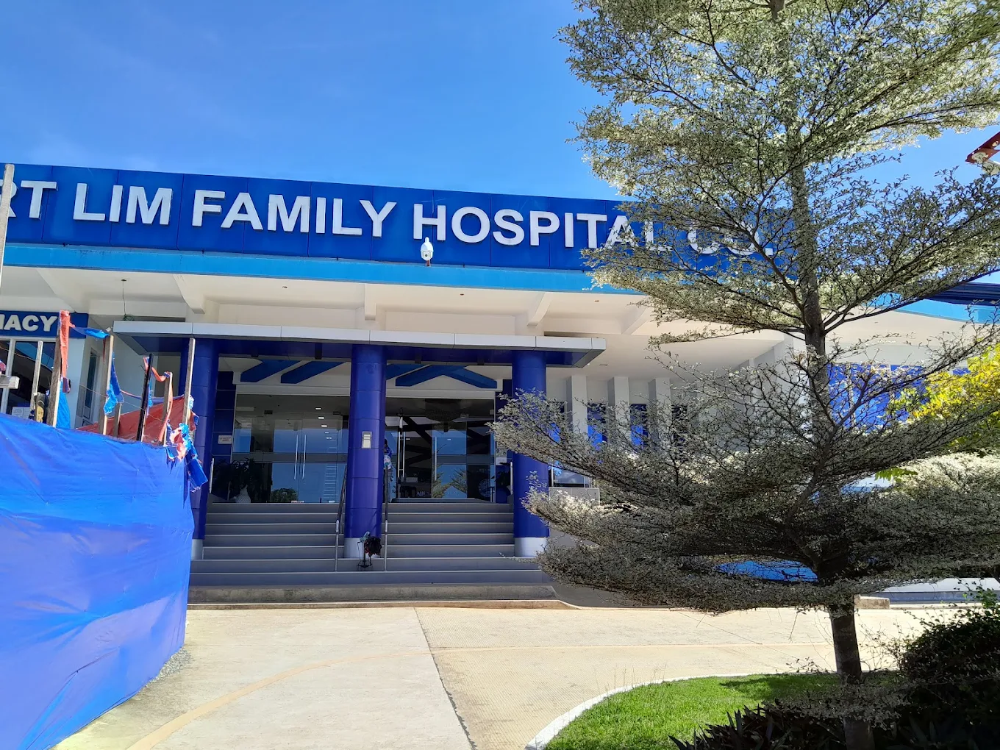
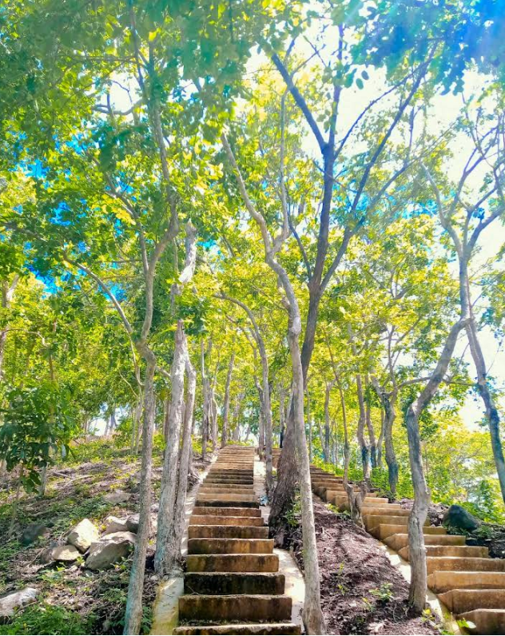
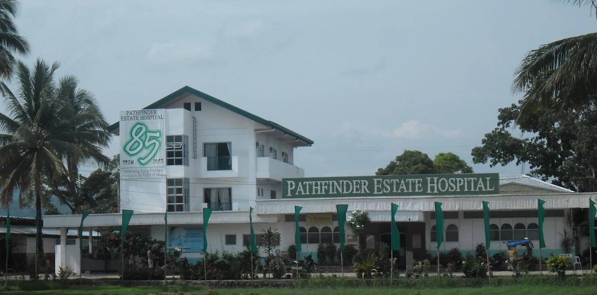

Overview
Medical tourism in Zamboanga Sibugay focuses on providing accessible, high-quality healthcare services to residents and visitors alike. With the capital of Ipil serving as the medical gateway, the province offers a range of public and private facilities equipped for diagnostics, specialized treatments, and emergency care.
By combining modern medical technology with the natural, peaceful environment of the province, patients can find a conducive space for recovery and wellness.
Key Medical Facilities
RT LIM Family Hospital Co.

Located in Purok Santan, Roseller T. Lim, the RT LIM Family Hospital Co. is a vital private healthcare provider in the western part of Zamboanga Sibugay. Known for its dedicated medical staff and community-focused care, it serves as a primary medical destination for travelers and residents in the RT Lim area, offering a range of diagnostic and inpatient services in a professional environment.
Ipil Doctors Hospital

Situated in the heart of the provincial capital, Ipil Doctors Hospital is a premier private medical institution in Zamboanga Sibugay. It is well-regarded for its modern diagnostic equipment, specialized clinical departments, and professional healthcare staff. As a key hub for medical tourism in the region, it provides both local and visiting patients with high-quality inpatient and outpatient services in a comfortable and well-equipped environment.
Pathfinder Estate Hospitalers

The Pathfinder Estate Hospitalers offers a specialized approach to healthcare within Zamboanga Sibugay. Focused on providing high-standard medical assistance and estate-based health services, it represents the province's growing diversity in private medical care. This facility is an essential part of the regional health network, ensuring that both residents and visitors in the surrounding municipalities have access to professional and dedicated medical support.